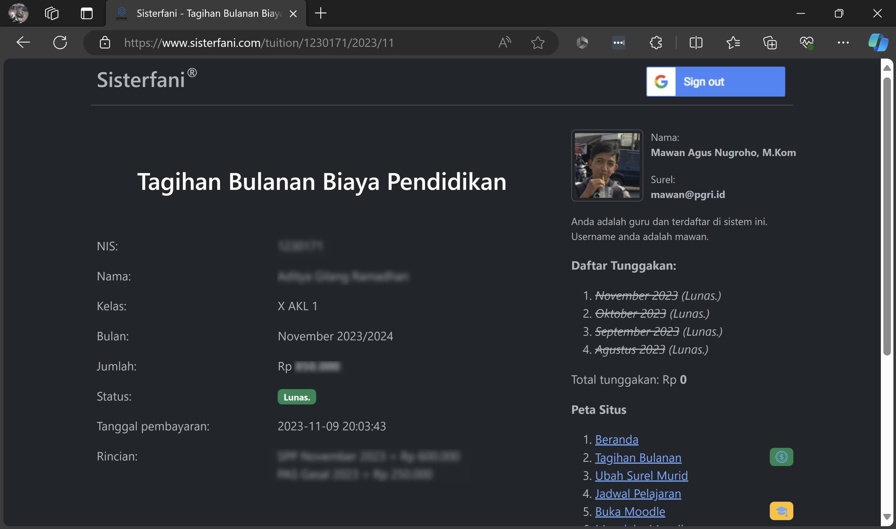

Mawan Agus Nugroho, M.Kom
Instruktur Nasional Guru Keahlian Ganda
Guru Penggerak angkatan 7
Semifinalis Acer Smart School Award
Blog ini meraih juara ke 3 Kategori Umum pada Lomba Perancangan Website Tingkat Nasional yang diadakan oleh APJII dan Microsoft Indonesia, tahun 1997;

Blog ini berisi artikel-artikel tentang komputer. Telah menghasilkan pendapatan dari iklan.

- Mengudara sejak 27 April 2017, non-stop 24/7.
- Bisa didengar melalui web maupun melalui aplikasi Radio Garden di Android maupun iOS.
- Sampai tulisan dibuat, masih menjadi satu-satunya radio sekolah yang mengudara secara streaming di Radio Garden, berdampingan dengan radio-radio besar seperti RRI, Prambors, Delta, Elshinta, Sonora, dan sebagainya.
- LMS pertama dibangun pada sekitar tahun 2015;
- Saat portofolio digital ini dibuat (30 Nov 2023), saya mengelola LMS milik:
Khusus untuk SMK PGRI 1 Tangerang, untuk masuk ke LMS Moodle harus melalui Sisterfani.
Pembelajaran memakai LMS Moodle telah dilakukan jauh sebelum masa Pandemi. Karena telah memakai LMS, di SMK PGRI 1 Tangerang tidak ada penjualan buku pelajaran. Modul ajar dibuat oleh guru dan disimpan di Moodle atau di Youtube yang tautan videonya disematkan di Moodle.
- Bot Telegram untuk memudahkan guru mengabsen murid-murid.
- Dibuat sekitar April 2020, ketika masa Pandemi dan Belajar Dari Rumah.
- Sampai sekarang telah dipakai oleh 30.000-an grup Telegram.
- Telah direview oleh berbagai Youtuber dan mendapat banyak respon positif.

- Dengan Sisterfani, guru / murid / orang tua murid dapat mengetahui Jadwal Pelajaran, tagihan SPP, dan ketidakhadiran guru / murid (absensi).
- Setiap murid diberi satu virtual account permanen di Bank Syariah Indonesia.
- Pembayaran SPP dapat dilakukan dengan cara transfer bank dari bank apa pun.
- Status pembayaran dapat dipantau secara realtime di Sisterfani.
- Tunggakan SPP bisa membuat murid tidak dapat masuk ke LMS Moodle.
- Untuk yang belum mampu membayar SPP, dapat meminta dispensasi. Dispensasi diberikan oleh wali kelas atau oleh petugas khusus bagian SPP.
Sisterfani adalah aplikasi yang mengintegrasikan hampir seluruh layanan online pada SMK PGRI 1 Tangerang.
SMKN 7 Tangerang, 26 Oktober 2021.
SMKN 2 Cilegon, 3 Oktober 2022.
SMK Farmasi Tangerang 1, 11 November 2023.
Menjadi Narasumber tentang Teknologi Komputer dan Informasi di:
- SMK PGRI 1 Tangerang (14/07/2023).
- SMKN 1 Tangerang (08/09/2021).
- SMK Farmasi Tangerang 1 (11/11/2023).
- SMKN 2 Cilegon (03/10/2022).
- SMKN 1 Pebayuran, Bekasi (28/10/2021).
- SMKN 7 Tangerang (26/10/2021).
- Lebih menggiatkan MGMP dan Komunitas Guru Penggerak untuk menerapkan teknologi di sekolah-sekolah lain.
- Membangun Customer Service untuk SMK PGRI 1 Tangerang dengan basis AI, sehingga masyarakat dapat bertanya kapan pun, 24/7, tentang sekolah, tentang kurikulum, tentang keadaan anaknya, dan sebagainya.
Tergerak, Bergerak, Menggerakkan!
© Mawan A. Nugroho.